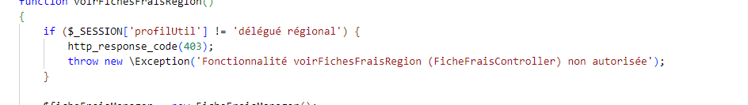

GSB Frais

Language utilisé: PHP, SQL
Architecture applicative: MVC(Contrôleur de vue de modèle)
Environnement technologie: Visual Studio Code
Gestion de projet: Projet d'équipe, méthode agile kanban
Contexte
Il s'agit de la gestion des tickets pour l'amélioration du site Galaxy Swiss Bourdin(GSB), une entreprise fictive.
Nous corrigeons les problèmes existants et ajoutons de nouvelle fonctionnalités en dévelopant des méthodes dans les
modèles, les vues, et les controlleurs(MVC).
Notamment pour la gestion CRUD et l'ajout de données utilisateurs.
Compétences acquises
Gérer le patrimoine informatique
✅ Recenser et identifier les ressources numériques
✅ Exploiter des référentiels, normes et standards adoptés par le prestataire informatique
✅ Mettre en place et vérifier les niveaux d’habilitation associés à un service
✅ Vérifier le respect des règles d’utilisation des ressources numériques
Répondre aux incidents et aux demandes d’assistance et d’évolution
✅ Collecter, suivre et orienter des demandes
✅ Traiter des demandes concernant les applications
Développer la présence en ligne de l’organisation
✅ Participer à l’évolution d’un site Web exploitant les données de l’organisation.
Travailler en mode projet
✅ Planifier les activités
✅ Analyser les objectifs et les modalités d’organisation d’un projet
Mettre à disposition des utilisateurs un service informatique
✅ Réaliser les tests d’intégration et d’acceptation d’un service
✅ Déployer un service
Projet réalisé

code


code


code


code

Architecture de l'applications